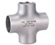
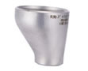
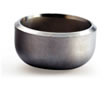

-

- ELBOWPipe elbows are mainly used for connecting two pipes or tubes,allowing a change of direction. We can provide short radius elbows and long radius elbows.Usually,pipe elbows are made of carbon steels,alloy steel,stainless steel or PVC,and more.They have high strength,good toughness and resistance to corrosion...
- Long Radius Pipe Elbow
Short Radius Pipe Elbow
-

- Pipe Bend Pipe bend can be made of variety materials, like carbon steel, alloy steel,stainless steel, low temperature steel or high performance steel,etc. Thus, our pipe bends have a wide range of applications in petroleum, power generation, natural gas, chemicals, ship building, construction, paper making and other industries.
-

- Pipe Tee We can provide seamless tube tees and welding tube tees,which can also be divided into straight tees and reducing tees.Usually,the pipe tees have the same inlet and outlet sizes.They feature high strength,good toughness and resistance to corrosion
Our pipe tees are widely used in many industries,such as petroleum...
-
- 
- Pipe Cross Pipe cross come into straight cross and reducing cross,and the raw materials of which include a wide range,like carbon steel,alloy steel,stainless steel,low temperature steel,and high performance steel,etc.our pipe crosses feature high strength,godd toughness and resistance to corrosion...
-
- 
- Pipe Reducer Pipe reducers come into concentric reducers and eccentric reducers.They are made of carbon steel,alloy steel,stainless steel,low temperature steel or high performance steel,etc.,and are characterized of high strength,good toughness,and high resistance to corrosion,shock,and vibration...
-
- 
- Pipe Cap Pipe cap,a type of pipe fittings,usually covers the end of a tube,and it has the simiar function with a plu.OUR pipe caps are made of carbon steel,stainless steel and alloy steel,etc.They feature high strength,good toughness,and high resistance to corrosion,and vibration.
bending,squeezing,pressing,forging,machining and more...
-

- Lap Joint Lap joint can be made of carbon steel,alloy steel or stainless steel,and more.Our lap joints are in accordance with a wide range of standards like ASME B16.9,ISO,API,EN,DIN,BS,JIS,and GB,etc.and they are certified by SGS and ABS.Thus,you can feel free to choose our products..
Thanks for you visit to CANGZHOU RITIA PIPE-FITTINGS MANUFACTURE CO.,LTD via internet.Weare a professional pipe bend manufacturer baseed in China.In addition,pipe elbows,pipe tees,pipe caps and all types of industrial pipes and flanges,etc., are available at CANGZHOU RITIA PIPE-FITTINGS MANUFACTURE CO.,LTD.These products have high quality and reasonable price.Also,we offer good sales service.Thus,our industrial pipe fittings are exported to Italy,Brazil,Saudi Arabia,South Korea,India,Bangladesh and Egypt,and many other countries and region.
We welcome you to try our products.For ordering,please feel free to contact us at CANGZHOU RITIA PIPE-FITTINGS MANUFACTURE CO.,LTD GROUP CO.,LIMITED.We look forward to working with you.
 English
English 中文
中文